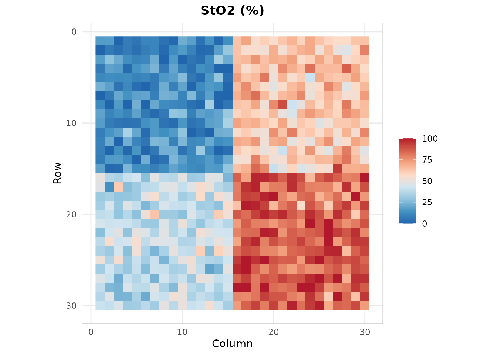

Installation
# Install from GitHub
# install.packages("remotes")
remotes::install_github("cttir/hyperspectR")Loading the Package
library(hyperspectR)
#> hyperspectR v0.1.0 - Hyperspectral Imaging Analysis for Biomedical ApplicationsCreating and Inspecting a Cube
hyperspectR provides synthetic data generators for testing and
demonstration. hs_example_cube() creates a 30x30 pixel
tissue scene with 61 spectral bands spanning 430-910 nm:
cube <- hs_example_cube()
print(cube)
#>
#> ── hsi_cube ────────────────────────────────────────────────────────────────────
#> Dimensions: 30 rows x 30 cols x 61 bands
#> Wavelengths: 430-910 nm (61 bands)
#> FWHM: 25 nm (mean)
#> Mask: 900/900 valid pixels (100%)
#> Data range: [0.0198, 0.7306]
#> Metadata: camera, processing_mode, acquisition_time, region_map,
#> sto2_ground_truth, seedCheck the dimensions:
dim(cube)
#> [1] 30 30 61The summary provides per-band statistics:
s <- summary(cube)
s$wavelength_range
#> [1] 430 910
s$data_range
#> [1] 0.01982067 0.73056093Subsetting
You can subset cubes spatially and spectrally while preserving the class:
sub <- cube[1:15, 1:15, 1:30]
dim(sub)
#> [1] 15 15 30Computing Tissue Indices
The package implements clinical tissue indices used in surgical HSI:
sto2 <- hs_sto2(cube)
hs_plot_index(sto2, title = "StO2 (%)", palette = "sto2")
Next Steps
- Read real data with
hs_read_envi()orhs_read_cube() - Preprocess with
hs_smooth(),hs_snv(),hs_msc() - Perform PCA with
hs_pca()or MNF withhs_mnf() - Classify with
hs_sam()or fit chromophores withhs_beer_lambert()
Use of LLM tools
Portions of this package were prepared with assistance from large
language model tooling for narrowly defined, non-authorial tasks:
copyediting, prose smoothing, Markdown/LaTeX formatting, scaffolding of
boilerplate files (CI configs, build scripts), code refactoring. The
tools used were Chat AI,
the LLM service of KISSKI (GWDG), and a self-hosted Mistral
Small (24B, Apache-2.0) run locally via Ollama and the ollamar R
package — local inference only, with no data sent to third parties for
the self-hosted model.
All scientific claims, methodological choices, analyses, interpretations, and conclusions are the author’s own. No LLM-generated text was incorporated without review and revision, and every reference was verified against its DOI, arXiv ID, or ISBN.